Fissionable nuclides can contain one ore more fission reactions in their ACE
data. NDPP must parse through each of these reactions (and the associated
delayed neutron precursor data), calculate the outgoing
energy spectra,  for each energy group at each incoming energy point
in the ACE tables (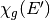), and then combine these in to a single
value of (on a single energy grid). To generate
, NDPP is solving the following equations for the prompt,
delayed, and total values of :
for each energy group at each incoming energy point
in the ACE tables (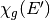), and then combine these in to a single
value of (on a single energy grid). To generate
, NDPP is solving the following equations for the prompt,
delayed, and total values of :
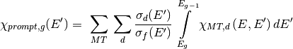
In the above equations,  is the incoming neutron energy,
is the reaction channel,
is the incoming neutron energy,
is the reaction channel,  is the energy distributions within that
channel, 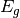 and 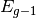 are the lower and upper energy group
boundaries for group respectively, 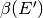 is the total
delayed neutron emission fraction, 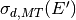 and
are the microscopic cross-sections of this reaction
channel and distribution occuring and the microscopic cross-section for all
fission reactions, and
is the energy distributions within that
channel, 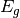 and 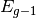 are the lower and upper energy group
boundaries for group respectively, 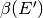 is the total
delayed neutron emission fraction, 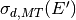 and
are the microscopic cross-sections of this reaction
channel and distribution occuring and the microscopic cross-section for all
fission reactions, and  is the yield of precursor group
is the yield of precursor group  .
.
The details of this process are discussed in the following sections.
To determine if a nuclide is fissionable, NDPP checks for presence of the 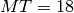 reaction channel in the ACE data. This channel is the total fission reaction, and must be present for there to be any possibility of generating values of for the nuclide. If the nuclide is fissionable, then the code determines the number of fission reaction channels, outgoing energy distributions, delayed neutron precursor groups, and the number of energy grid points for each.
Then, NDPP progresses through each fission channel (and energy distributions
within that channel) and delayed neutron precursor group to obtain values for
each of the terms in the equation above. The values of
 , , 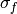, and are
calculated by the same means discussed in the OpenMC manual. The calculation of
is described in the
next section.
, , 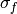, and are
calculated by the same means discussed in the OpenMC manual. The calculation of
is described in the
next section.
Monte Carlo codes must sample single values from probability distribution functions; NDPP, however, must integrate that probability distribution function between upper and lower boundaries. Therefore, the ACE Laws are utilized in different ways than described in the OpenMC manual and will be discussed herein.
All fission reactions are obtained from either ENDF File 5 (Energy Distribution of Secondary Particles) or File 6 (Product Energy-Angle Distributions). The following subsections discuss each of the ACE Laws used to describe fission neutron energy distributions in ENDF/B-7 and how these laws are treated by NDPP.
After the calculation of for each energy group, the values are normalized to 1.0 to account for any inaccuracies introduced by the interpolation schemes.
This representation is essentially a two-dimensional table which provides
points of both the probability distribution function
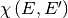, a cumulative distribution function (CDF)
, and rules for interpolating
between each of the E and E’ data sets. To determine
, NDPP must first
find the location of the data corresponding to data, and then
interpolate on the CDF to find teh CDF at and . The
value of is simply
the difference between these two values. The interpolation rules are followed
as described in the OpenMC Methods Manual.
One representation of the secondary energies for neutrons from fission is the so-called Maxwell spectrum. A probability distribution for the Maxwell spectrum can be written in the form
where  is the incoming energy of the neutron and
is the incoming energy of the neutron and  is the
so-called nuclear temperature, which is a function of the incoming energy of the
neutron. The ACE format contains a list of nuclear temperatures versus incoming
energies. The nuclear temperature is interpolated between neighboring incoming
energies using a specified interpolation law. Once the temperature is
determined, we then can analytically determine the value of
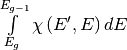 with the following
relation:
is the
so-called nuclear temperature, which is a function of the incoming energy of the
neutron. The ACE format contains a list of nuclear temperatures versus incoming
energies. The nuclear temperature is interpolated between neighboring incoming
energies using a specified interpolation law. Once the temperature is
determined, we then can analytically determine the value of
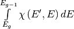 with the following
relation:
This integral is forced to 0 for values of E’ greater than the restriction energy, 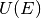.
Evaporation spectra are primarily used in compound nucleus processes where a secondary particle can “evaporate” from the compound nucleus if it has sufficient energy. The probability distribution for an evaporation spectrum can be written in the form
where is the incoming energy of the neutron and is the
nuclear temperature, which is a function of the incoming energy of the
neutron. The ACE format contains a list of nuclear temperatures versus incoming
energies. The nuclear temperature is interpolated between neighboring incoming
energies using a specified interpolation law. Once the temperature is
determined, we then analytically determine the value of
with the following
relation:

This integral is forced to 0 for values of E’ greater than the restriction energy, .
The probability distribution for a Watt fission spectrum can be written in the form
where  and
and  are parameters for the distribution and are given
as tabulated functions of the incoming energy of the neutron. These two
parameters are interpolated on the incoming energy grid using a specified
interpolation law. Once the parameters have been determined, we then
analytically determine the value of
with the following
relation:
are parameters for the distribution and are given
as tabulated functions of the incoming energy of the neutron. These two
parameters are interpolated on the incoming energy grid using a specified
interpolation law. Once the parameters have been determined, we then
analytically determine the value of
with the following
relation:
This integral is forced to 0 for values of E’ greater than the restriction energy, .
This law is very similar to ACE Law 4, except there is another dimension in the
table to represent the angular probability distribution function. Since the
portion of NDPP is not concerned with the outgoing angle, and
therefore this extra dimension can be ignored. Therefore the methods used to
calculate , are the
same as is discussed in the Law 4 section.
At this stage, NDPP has a tabular representation of
for each incoming
energy, , and outgoing energy group, for every fission
reaction channel and energy distribution as well as for each of the delayed
neutron precursor groups. Each of these tables has values on a completely
different set of incoming energies (since the ACE data are on separate energy
grids as well) and must be combined on to the same energy grid for the prompt,
delayed, and total values of . This unionized energy grid
is made by using all of the energy points in the relevant
distributions and linearly interpolating between values for points without a
data set on the grid. Due to the additional interpolation step, these values
are also re-normalized to 1.0. A unioninzed grid exists for each of the prompt,
delayed, and total values of .
Since the unionized grids must be searched by the Monte Carlo code during
runtime, it is desirable to have the size of the grid be as small as possible.
To this end, NDPP provides the user with an option to thin the energy grid
such that points which provide an increase accuracy of less than the
user-specified tolerance when linear interpolation with neighboring points is
used instead of the explicit value are discared from the data.
This feature is not yet implemented.